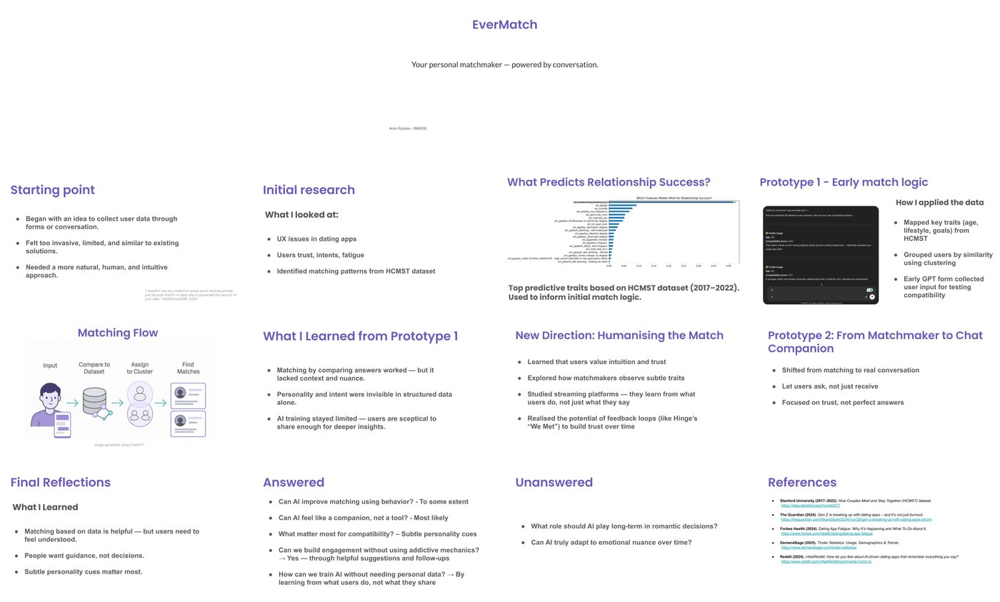

- Can AI improve matching using behaviour? To some extent — yes, behavioural signals outperform self-reported preferences on the predictors the dataset could measure.
- Can AI feel like a companion, not a tool? Likely yes. The reframing from recommender to conversational partner is the most consequential design move in the project.
- What matters most for compatibility? Subtle personality cues, not surface preferences.
- Can engagement be built without addictive mechanics? Yes — through helpful suggestions and follow-ups, not novelty rewards.
- Can the model train without invasive personal data? By learning from what users do, not what they declare.
Case Study
EverMatch
An AI matchmaker that became an AI companion.
A short academic prototype that started as a data-driven dating match engine, ran into the limits of what structured data can actually predict about human connection, and pivoted into a behavioural chat-companion built on observed behaviour rather than declared preferences. The pivot is the case.
01
The starting point
Dating apps ask for a lot up front. Profile fields, photographs, lifestyle preferences, height, employment, prompts. Most of what they collect is performative — what people say they want rather than what predicts whether they'll actually like the person they meet. The starting hypothesis for EverMatch was modest: that AI could improve on the form-and-photo paradigm by inferring compatibility from a smaller set of carefully chosen signals.
The opening question — what can AI actually contribute to matching that the existing paradigm can't? — broke into three sub-questions:
- Which traits actually predict relationship success?
- Can a model learn those traits from conversation rather than forms?
- And can the result feel like guidance, not surveillance?
02
What the data says
To find an empirical floor, I used the Stanford HCMST dataset (2017–2022) — the longitudinal How Couples Meet and Stay Together study, which tracks paired couples and what stays paired across waves of the survey.
A feature-importance pass on the dataset surfaced the strongest predictors of couples still being together at the latest wave. Some of them were unsurprising (relationship length at first survey, age gap). Some were less obvious — meeting context, frequency of shared social activity, weekly chore distribution, the survey's measure of "differing political opinions" as a positive predictor when paired with reported communication quality.
What the dataset couldn't tell me was anything about the early-stage compatibility question — what predicts a first meeting going well, before there's enough shared history to measure. Most of the strong predictors require time. The matching question and the survey design didn't fully overlap.
"I wouldn't use any chatbot to speak about anything private, just because there's no easy way to guarantee the security of your data." — Initial user research (n=9, MSc 2025)

03
Prototype one
The first prototype was a match engine: collect user traits via a GPT-driven form, embed them, cluster the user against the existing user base, and surface the nearest neighbours as candidate matches.
What the prototype taught:
- Comparing answers works, but lacks nuance.Two users who described their politics, hobbies, and weekend habits in similar terms scored as a match. Whether they would actually enjoy each other's company was invisible to the system.
- Personality and intent are invisible to structured data.The dataset's strongest predictors required relationship history. The application context — strangers being matched for a first meeting — has no history yet. The data-driven floor was lower than it looked.
- Users were sceptical of sharing enough to train better.Privacy worries weren't theoretical. Asking for the depth of data that might have made the matching genuinely better hit immediate resistance.
Prototype one solved a smaller problem than I'd set out to solve. It worked, in a narrow technical sense, and it didn't earn user trust. That combination is a signal that the problem-framing was wrong.
04
The pivot
The pivot took the question from "how do we match people more accurately?" to "what could AI usefully do for someone dating?" — and the answer changed.
Three pieces of secondary research moved the design:
- Matchmakers observe before they prescribe. Professional human matchmakers spend disproportionate time learning the client's patterns and preferences before they propose anyone. The "match" is the easy part; the "know" is the work.
- Streaming platforms learn from behaviour, not declarations. Netflix doesn't ask whether you like comedies; it watches what you finish. The strongest signal is what you actually do, not what you say you want.
- Feedback loops build trust over time. Hinge's "We Met" prompt — did you actually meet? how did it go? — is structurally simple and behaviourally powerful. Users learn that the app is paying attention and adjust accordingly.
The pivot: stop building a matcher. Build a companion that watches, asks lightly, and learns — and surfaces matches only when its model of the user is dense enough to mean something. The match engine becomes the back-of-house. The user-facing thing is conversation.
05
Prototype two
The redesigned prototype is a chat-companion. The user doesn't fill in a form; they have a conversation. The model learns over time. Matches surface in the conversation when the model has the confidence to suggest them.
Three deliberate moves:
- Let the user ask, not just receive. The companion is reactive to user-initiated questions ("what should I be doing differently?", "should I message back tonight or in the morning?"), not just a top-down recommender.
- Earn trust before it's spent. The first sessions focus on listening — what dating actually feels like for this user right now, what worked and what didn't. Matching is held back until the user wants it.
- Focus on what users do, not what they say. Sentiment after dates, frequency of conversation continuation, follow-through on suggestions — all of it observable, all of it richer than form data.
The companion never asks for the kind of demographic data that triggered the privacy resistance in prototype one. It infers what it needs from how the conversation moves.
06
Answered, unanswered
The honest summary at the end of a short project.
- What role does AI play long-term in romantic decisions? Open. The case study only covers the first three to six sessions of use.
- Can AI truly adapt to emotional nuance over time? Open. A longer-term, longitudinal study would be needed — and not within the scope of a single MSc module.
07
What this project taught me
EverMatch was a single-semester academic project. It produced no users and shipped to no app store. The reason it's in the portfolio is because of how it failed.
Prototype one was the design I'd planned. It was technically competent and it didn't matter. The data couldn't answer the early-compatibility question and the users wouldn't share the data that might have. That combination is the structure of a lot of AI-product failures in the wild — a solution working on the wrong shape of problem, with users correctly refusing to fund the gap.
The pivot was the lesson. Most of the AI-product work I've done since — including the design of BranchFlow's curated-context model — has been informed by what EverMatch surfaced: that the most valuable thing AI can do for a user is often not the thing the user is currently being asked to feed it data for.